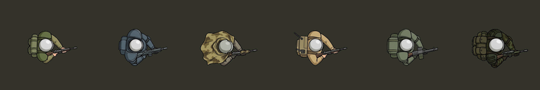
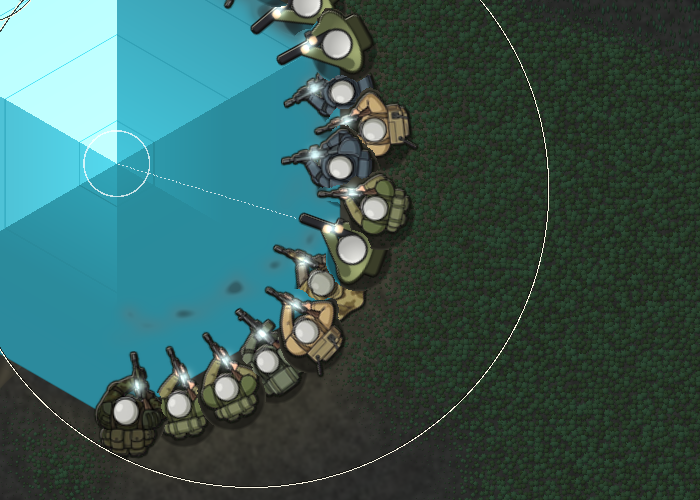
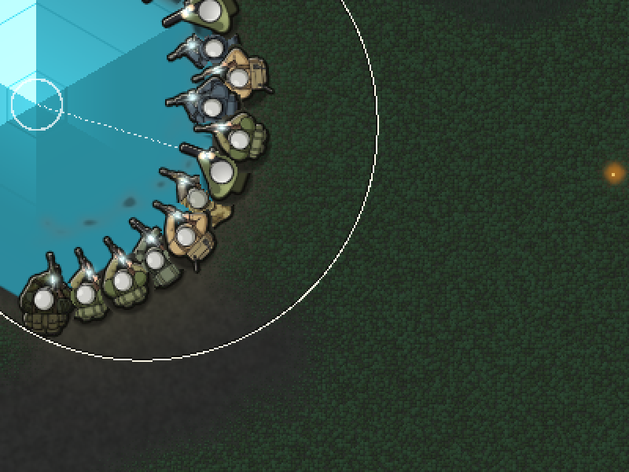
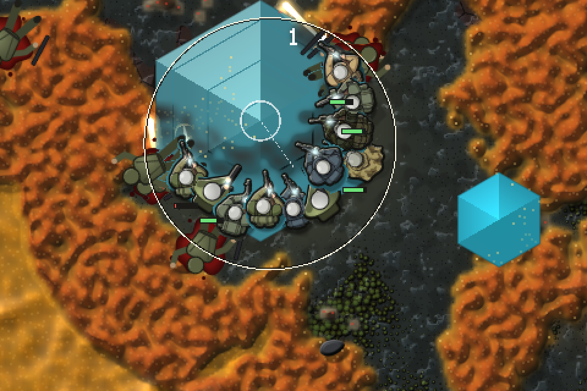
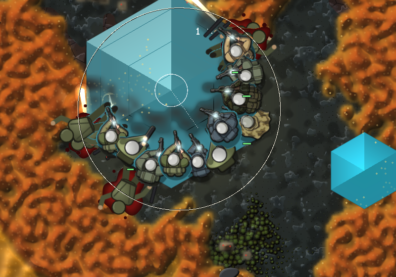

<title>Soldier Skins Test</title>
<meta name="claude:viewport-fit-sides" content="cover">
<link rel="stylesheet" href="https://fonts.googleapis.com/css2?family=Space+Grotesk:wght@500;600&family=Inter:wght@400;500&display=swap">
<style>
/* One column of game frames, each with its counts beside it; dark like the game. */
:root {
  --bg: #16170f; --panel: #20221a; --fg: #e7e6dc; --muted: #a3a594; --line: #34372b; --accent: #c9b46a;
  --display: "Space Grotesk", system-ui, sans-serif; --text: "Inter", system-ui, sans-serif;
  color-scheme: dark;
}
body { background: var(--bg); color: var(--fg); font: 15px/1.55 var(--text); }
main { max-width: 980px; margin: 0 auto; padding-block: 28px 56px; padding-left: max(16px, env(safe-area-inset-left, 0px)); padding-right: max(16px, env(safe-area-inset-right, 0px)); display: grid; gap: 28px; }
h1 { font: 600 30px/1.15 var(--display); margin: 0; text-wrap: balance; }
h2 { font: 600 19px/1.25 var(--display); margin: 0; text-wrap: balance; }
p { margin: 0; max-width: 68ch; }
.lead { color: var(--muted); }
figure { margin: 0; display: grid; gap: 10px; background: var(--panel); border: 1px solid var(--line); border-radius: 6px; padding: 14px; }
figure img, figure video { width: 100%; height: auto; display: block; border-radius: 3px; image-rendering: auto; }
figcaption { display: grid; gap: 4px; color: var(--muted); font-size: 14px; }
figcaption b { color: var(--fg); font-weight: 500; }
.key { display: grid; grid-template-columns: repeat(7, minmax(0, 1fr)); gap: 6px; font: 500 12px/1.3 var(--text); color: var(--muted); text-align: center; }
.key span { padding: 4px 2px; border: 1px solid var(--line); border-radius: 4px; }
.key span b { display: block; color: var(--accent); font: 600 15px/1.2 var(--display); }
ul { margin: 0; padding-left: 20px; display: grid; gap: 6px; max-width: 68ch; }
code { font: 13px/1.4 ui-monospace, monospace; color: var(--fg); }
.tag { color: var(--accent); font: 500 12px/1 var(--text); letter-spacing: .08em; text-transform: uppercase; }
</style>
<main>
  <div style="display:grid;gap:10px">
    <span class="tag">Look · 2026-11-19</span>
    <h1>Soldier Skins Test</h1>
    <p class="lead">Your soldiers now wear what you bought: olive with no Armour, slate after one or two Armour upgrades, dark camo after three or four. Below that is the test that picked these three from your first generated sheet.</p>
  </div>

  <h2>What landed: the squad by Armour</h2>
  <figure>
    <video src="armour-zoom12.mp4" autoplay muted loop playsinline controls></video>
    <figcaption><b>Zoom 12, 3 s at 10 frames a second</b> (planet 1, run seed 1, greedy hand, game 40.0 to 42.9 s): 15 to 16 soldiers draining the first crystal. Left to right: no Armour (olive), Armour 2 (slate), Armour 4 (dark camo). The look changes nothing in the game, so the three runs are the same frame for frame (shots 449, kills 370 at 43 s in each).</figcaption>
  </figure>
  <figure>
    <video src="armour-zoom6.mp4" autoplay muted loop playsinline controls></video>
    <figcaption><b>Zoom 6, the same 3 s at 5 frames a second, shown twice the size</b> (pixels kept square): the size you play at. The helmets stay the same white dome, so you can still count the squad; each look's muzzle flash sits on its own barrel.</figcaption>
  </figure>
  <ul>
    <li>Every living soldier wears the run's look. The fallen keep today's body until each look has a fallen version.</li>
    <li>Dark camo is the darkest of the three and reads clearly against the bare ground and the crystal here. In the test it sank into the darkest ground; if that bothers you in play, one small image edit to try is "lighten the camo pattern a little".</li>
    <li>To change the designs, edit the sheet and run <code>src/world/sprites/cut.py</code>, which cuts and scales each figure into the game's frame.</li>
  </ul>

  <h2>The test that chose them</h2>
  <p class="lead">Your first generated sheet's six soldiers, cut out and put in the game beside today's sprite (A). Each soldier drew design <i>its number mod 7</i>, so one squad showed every design in the same light. This ran on a separate build.</p>

  <figure>
    
    <figcaption><b>The six designs as the game's 128 px tiles</b> (designs 1 to 6, left to right; they match your sheet's order, left to right then top to bottom). Each is scaled so its gun tip lands where today's muzzle flash fires. Helmets are a little smaller than sprite A's (0.24 to 0.29 radii against 0.36).</figcaption>
  </figure>

  <div class="key" aria-label="Design numbers">
    <span><b>A</b>today</span><span><b>1</b>olive</span><span><b>2</b>slate</span><span><b>3</b>cloak</span><span><b>4</b>radio</span><span><b>5</b>heavy</span><span><b>6</b>dark camo</span>
  </div>

  <h2>Planet 1, the squad draining a crystal</h2>
  <figure>
    <video src="p1-zoom12.mp4" autoplay muted loop playsinline controls></video>
    <figcaption><b>Zoom 12, 3 s at 10 frames a second</b> (game 40.0 to 42.9 s): 16 soldiers firing at the slime reaching the crystal. Run seed 1, greedy hand.</figcaption>
  </figure>
  <figure>
    
    <figcaption><b>Zoom 12 at 45 s</b>: 16 soldiers, about two of each design.</figcaption>
  </figure>
  <figure>
    
    <figcaption><b>Zoom 6 at 45 s, shown twice the size</b> (pixels kept square): the size you play at. Colour tells the designs apart; the cloak (3) and dark camo (6) are the hardest to read.</figcaption>
  </figure>

  <h2>Planet 3, in the fight on the slime</h2>
  <figure>
    
    <figcaption><b>Zoom 6 at 60 s, shown twice the size</b>: 11 soldiers standing round a crystal, the Trunk's orange slime and its amber walls about them; the fallen are today's sprite.</figcaption>
  </figure>
  <figure>
    
    <figcaption><b>Zoom 12 at 60 s</b>: the same squad up close.</figcaption>
  </figure>

  <div style="display:grid;gap:10px">
    <h2>What I saw in the test</h2>
    <ul>
      <li>Every helmet stays a clear white dome, so the squad can still be counted at zoom 6.</li>
      <li>At zoom 12 the new designs carry more character than sprite A: packs, pauldrons and the radio aerial all read.</li>
      <li>At zoom 6 they come down to colour and outline. The olive (1), radio (4) and heavy (5) designs read best; the dark camo (6) sinks into dark ground, and the cloak (3) reads as a bush.</li>
      <li>Their thick outline did not double up with the game's as I feared; at game size it reads as one line.</li>
      <li>The muzzle flash sat about 0.15 radii off the new barrels. The landed looks move it onto them.</li>
    </ul>
    <p>You picked olive, slate and heavy by Armour, then dark camo in place of heavy. Still open: whether each gun (rifle, carbine, long gun, scattergun) gets its own design, so you can see what a soldier carries.</p>
  </div>
</main>
